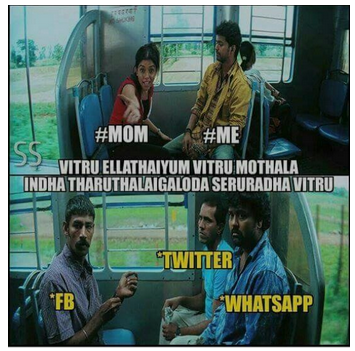
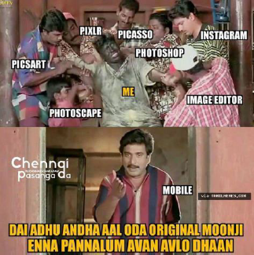

#NoFilter
“Who is (are) your role-model(s) or inspiration in life?”
Tagging your friends in a meme on Facebook, updating your story and posting a selfie on Instagram, scrolling through the latest tweets on Twitter, texting your friend, girl/boyfriend or crush on Whatsapp. Let’s be honest, without doing all of this, our day is incomplete. The world is moving at an extremely fast pace, and we, both youngsters and old people alike feel the pressure and need to keep up with the latest trend, lest we fall behind and feel left out. As always, there are exceptions. Take my mother for instance. The meme below says it all 😉
Don’t worry, this blog post is not going to be a lecture on how you should stay away from social media, use it less often, etc. Despite the meme above, my mom did make one valid point that got me thinking. In all this frenzy to document our lives on social media, so all our friends can see how much “glamour” and “fun” or in some cases lack, there is in our lives, we’ve stopped being true to ourselves. All of us (myself included) have become “fake” people. Sadly, by this I mean that we as a person, behave differently on social media than we would in real life. Maybe it’s because we feel more secure behind the “shield” of our mobile phone or computer, especially when you are texting someone or tagging them in a meme. How many of us would have the courage to say everything we've ever texted someone, directly to that person's face in real life? And, what is it with these guys and girls who hit on people through text? I mean seriously, come on, do they not get that it's creepy? Please, if you don't have the guts to talk to him or her in person, trust me, you don’t stand a chance.
I may be wrong, but I feel like these days, rather than posting about our own lives, the lives that we currently lead, our social media updates are becoming more of a portrayal of the “perfect” life, we WISH we had. By posting these updates, we make everyone else think that we have such an amazing life. Immediately, your friend thinks, “Oh my god, his/her life is so amazing. Only, my life is boring.” And the next thing you know, he or she out of peer pressure, ends up updating his/her status to keep up. As if somehow, by posting this “fake” status, it will make his or her life better. The next one is for all of us. When it comes to taking selfies and pictures and posting them, we are so obsessed with looking "good", that we edit the pictures and use so many filters, that we don't even look like ourselves anymore. I'm sorry, but I couldn't help adding this meme 😉
Anyway, on a serious note, I read a quote the other day that said, “ Social media has created jealous behaviour over illusions. Sadly some are envious of things, relationships and lifestyles that don’t even exist.” Let’s all try to deny this shall we? My point is, how about all of us stop being "fake" and start trying to be more real? Next time, let’s stop and think before we text someone, tag someone update our status or post a picture. I mean it wouldn't kill us to use the caption #nofilter would it?
-Shukrithi